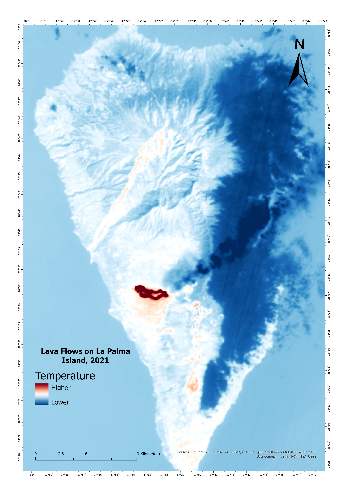
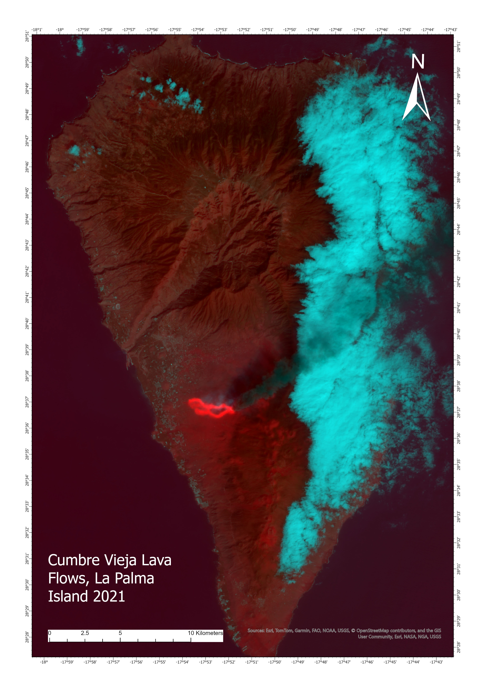
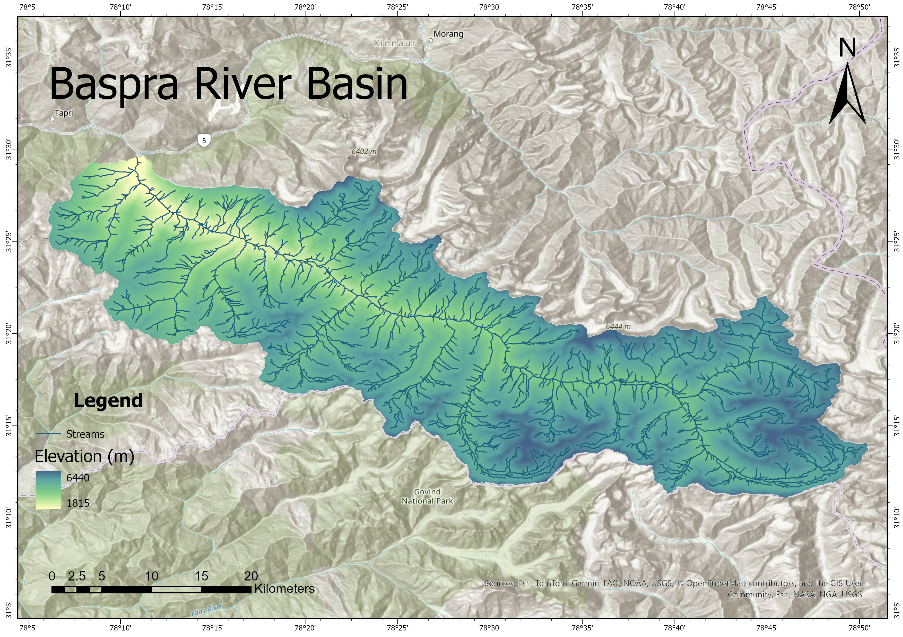

Tranquility in Loch Lomond and The Trossachs National Park

Park authorities and other stakeholders are interested in the areas within the park that can be considered the most tranquil, but tranquility
is hard to define. A weighted overlay analysis, created through a pairwise comparison matrix of four variables (views of the lake, proximity
to woodlands, and proximity and views of anthropogenic features) allows for determination of areas of tranquility.
2021 Cumbre Vieja Volcanic Eruption


Pseudo color (first image) and false color (second image) maps of the 2021 Cumbre Vieja volcanic eruption lava flows on the island of La Palma.
Images were created with IR and composite B-G-IR rasters, then a histogram stretch applied to show increased details of the island.
Baspra River Basin

A map of the Baspra River Basin in the western Himalayas. Starting with a DEM, the data was cleaned, and the elevation and angles of each
surface of the mountains calculated and stream runoff paths determined. Finally, a single pour-point was chosen at the mouth of the Baspra
River, and the watershed for that point calculated.